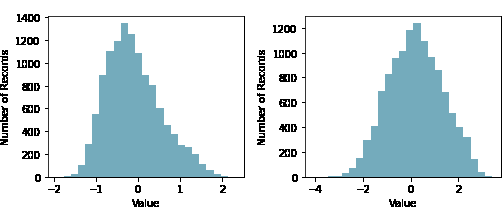

What is a Yeo-Johnson Power Transformation?
The Yeo-Johnson Power Transformation creates normality within a dataset
What is the Business Challenge?
Many times, a dataset contains information that with no adjustment fails to provide accurate information under statistical analysis. Transformations are just one adjustment used to make data more fit for statistical analysis (Reducing skewness, creating linear relationships, etc .)
What is a Yeo-Johnson Power Transformation?
A Yeo-Johnson Power Transformation works similarly to the Box-Cox transformation. Essentially, the Yeo-Johnson Power Transformation inflates low variance data and deflates high variance data to create a more uniform dataset. What sets the Yeo-Johnson Power Transformation apart however is the ability to transform data with negative numbers.

How will Ready Signal Help?
Ready Signal allows you to change your signal to automatically apply a logarithmic transformation to your data. With one click of a button, a signal can be automatically calculating and incorporating log transforms into the data stream.
References
Weisberg, Sanford. “Yeo-Johnson Power Transformations.” Department of Applied Statistics, University of Minnesota, 26 Oct. 2001, www.stat.umn.edu/arc/yjpower.pdf.
Cox, Nicholas J. Fmwww.bc.edu, Durham University, 25 July 2007, fmwww.bc.edu/repec/bocode/t/transint.html.